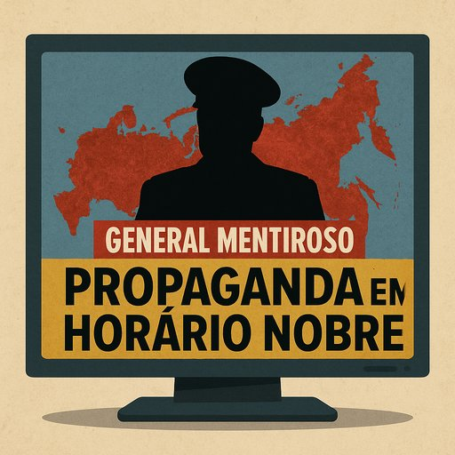

Publicado em 2025-07-12 13:53:58
Portugal vive tempos sombrios de desinformação disfarçada de análise militar.
E o mais chocante não é que tal aconteça em redes sociais ou em grupos conspirativos de Telegram — mas sim em direto, em horário nobre, nos canais televisivos que deviam informar o público.
Na linha da frente desta farsa mediática, estão dois nomes que se repetem como martelo:
General Agostinho Costa e General Isidro de Morais Branco.
Ambos reformados. Ambos com currículo militar.
E ambos convertidos em analistas residentes que parecem mais representantes oficiosos do Kremlin do que defensores da verdade.
Basta ouvir meia dúzia de comentários destes generais nos canais como a CNN Portugal para percebermos o guião:
Não se trata de pluralismo de opinião.
Trata-se de manipulação revestida de autoridade.
Estes generais reformados não comentam: justificam.
Não analisam: torcem os factos.
Não alertam: relativizam crimes.
Usam o seu estatuto para dar uma aparência de neutralidade a posições que, na prática, beneficiam diretamente uma potência invasora e autocrática.
Quando um general defende o agressor, a farda que veste é a da mentira.
E quando a televisão lhe dá palco, o que se transmite não é opinião — é complicidade com a desinformação.
Estamos a falar de uma guerra com milhares de mortos civis.
De crimes de guerra documentados.
De um país soberano invadido brutalmente por um império decadente.
Tentar suavizar isso é indigno.
E mais indigno ainda é usarem-se os galões da República para camuflar aquilo que é, na essência, um insulto à inteligência e à dignidade dos cidadãos.
A CNN Portugal, e outras plataformas que promovem estes comentadores, devem responder por esta escolha editorial.
Não basta dar palco a quem fala “com voz grave”.
É preciso garantir que a análise se baseia em factos, ética e verdade.
Se querem entretenimento, contratem palhaços.
Se querem informar, escolham especialistas.
Mas deixem de vestir a mentira com medalhas.
O povo português não pode continuar a ser tratado como ignorante.
Já nos enganaram com banqueiros de gravata.
Com engenheiros de trafulhice.
E agora querem normalizar generais do engano.
Nós não marchamos com eles.
Marchamos com a verdade.
Francisco Gonçalves
Fragmentos de Caos, Editor
Porque o que veste galões, mas carrega desonra, não é general — é actor de propaganda.